This document describes how to access the source code for the EMF, SDO and XSD projects, which is located in the eclipse.org CVS respositories. It assumes some familiarity with CVS concepts and some experience working with the Eclipse workbench. For more information on CVS, please consult eclipse.org's CVS repository page. Eclipse's help system also provides a tutorial and documentation for CVS.
This document includes a setup procedure that you may wish to use to checkout the EMF, SDO and XSD projects and resolve compilation errors. We have used this procedure on Eclipse 3.0.0 with a clean workspace.
In order to develop on the EMF, SDO and XSD projects, you need the following software installed on your system:
When specifying directory paths on your system, remember to compensate for any difference between the environment presented in this article and your development environment.
You need to specify where Eclipse should look for required plug-ins if they do not exist in the current workspace. To do this:
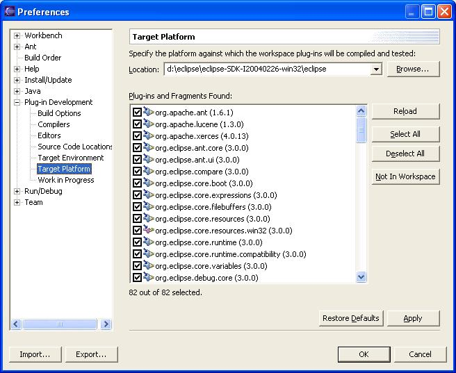
It is highly recommended to prune empty directories when extracting the code from the CVS repository. This is how you can set Eclipse to do that:
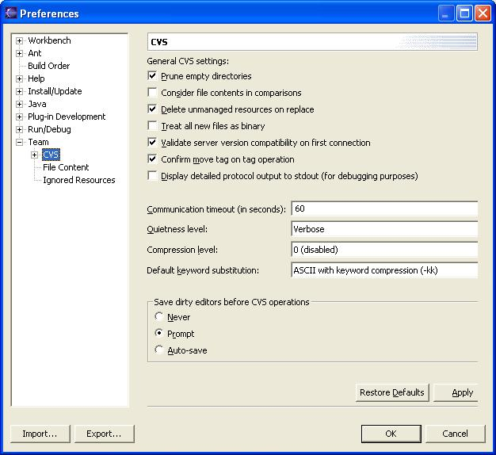
If you are unfamiliar with CVS concepts, there is a good list of resources on the CVS repository page.
The EMF, SDO and XSD source is divided into three modules in CVS.
| CVS Repository | Module | Directories | |
| /cvsroot/tools | org.eclipse.emf | ||
| plugins | contains the EMF runtime plug-ins and features | ||
| doc | contains the EMF documentation plug-ins and features | ||
| tests | contains the EMF, SDO and XSD automated tests plug-ins and features | ||
| examples | contains the examples for the EMF, SDO and XSD projects | ||
| /cvsroot/tools | org.eclipse.emf.ecore.sdo | ||
| plugins | contains the SDO plug-ins and features | ||
| doc | contains the SDO documentation plug-ins and features | ||
| /cvsroot/tools | org.eclipse.xsd | ||
| plugins | contains the XSD runtime plug-ins and features | ||
| doc | contains the XSD documentation plug-ins and features | ||
Both XSD and SDO are part of the EMF Tools project.
For each build, a new CVS tag is created. The name of the CVS tag follows this convention:
build_<build id>
where <build id> is usually the build timestamp in the yyyyMMddhhmmss format (for example, 20040211140643).
The HEAD branch always contains the latest file versions, which are currently under active development. If a fix is required for a particular past build (typically a release), a branch will be created. The branch naming convention is:
branch_<build id>
The structure of the CVS repository is shown below:
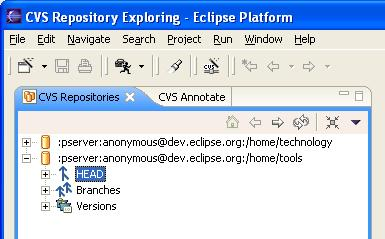
If for some reason you need to get files from a certain build, look under "Versions" for the tag that identifies that build.
An anonymous user has access only to check out files from the CVS repository. This user does not have the privileges to check in files.
EMF, SDO & XSD
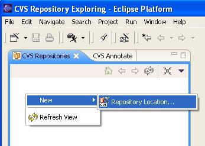
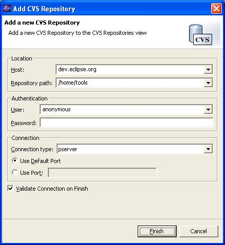
If you followed the instructions in the previous section, you should see a new repository entry in the CVS Repositories view. To check out code, do the following:
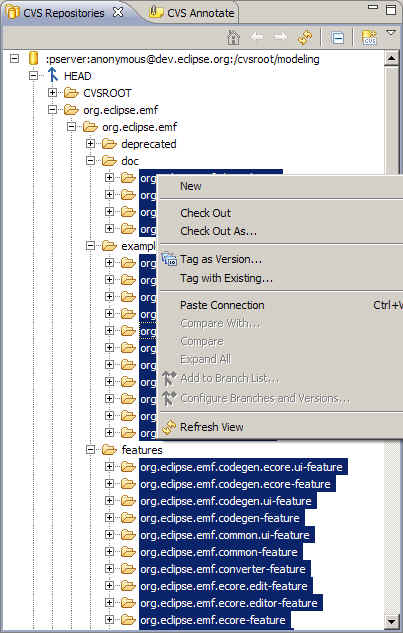
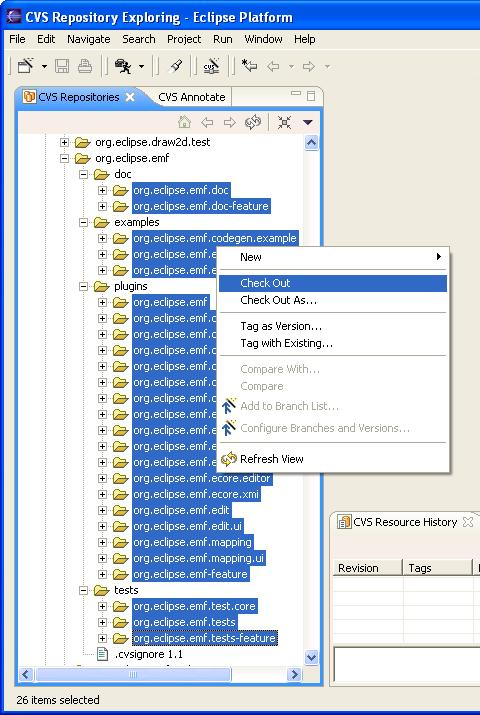
You may find that the projects have compilation errors after you check them out. To resolve these, update the classpath. Right click on the project and select the PDE Tools > Update Classpath... menu option as shown below. The Java Classpath dialog appears.
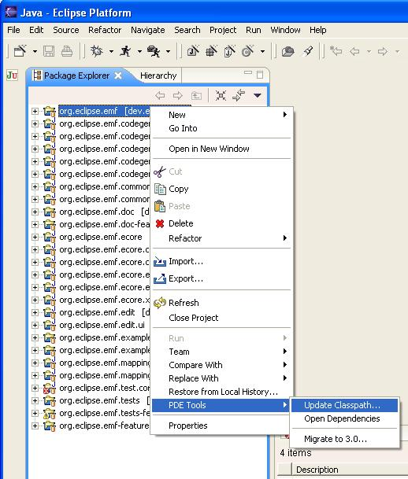
Ensure that any projects with dependency problems are checked in the list of available plug-ins and fragments, and then click Finish.
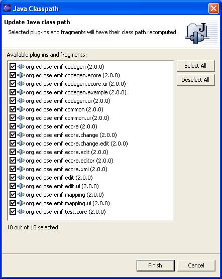
As described above, the HEAD branch contains the latest verision of the code. To synchronize your local changes with the HEAD, right click on the resource that you want to synchronize, and then select Team > Synchronize with Repository.
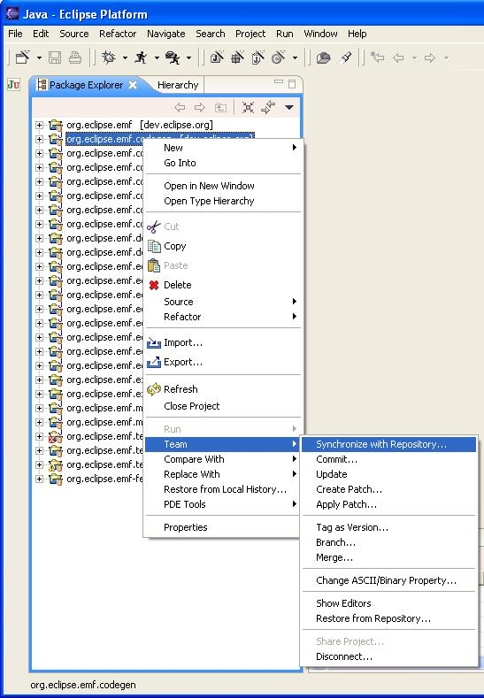
This opens the Synchronize view, which is briefly described by the following text from the Eclipse help system. Please refer to the Eclipse help for additional information about this view.
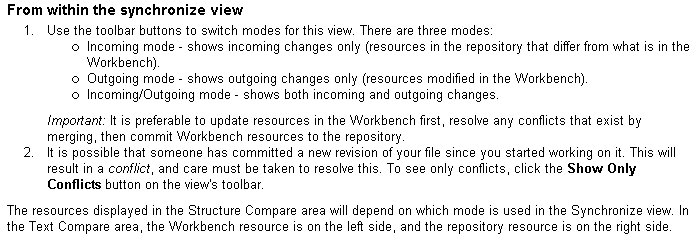
You can merge in the changes from the HEAD manually or automatically. To merge automatically, right click on the resource you want to merge. Select Team > Update, as shown below.
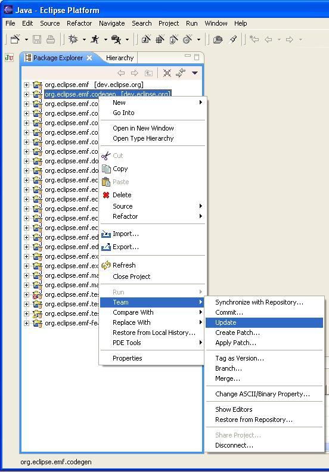
If there are conflicts that cannot be resolved automatically, CVS will insert special markup in the file to indicate that those lines could not be merged. You will need to resolve the conflicts manually. For more information how to do this, please refer to the Eclipse help system.